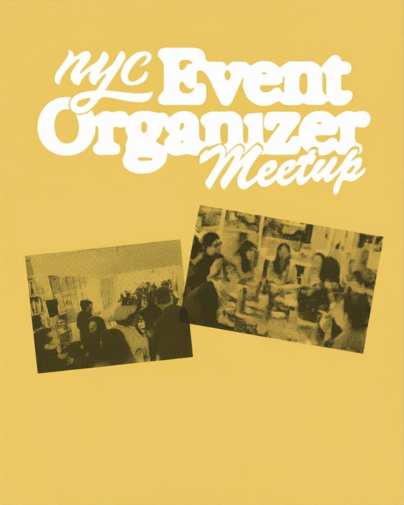
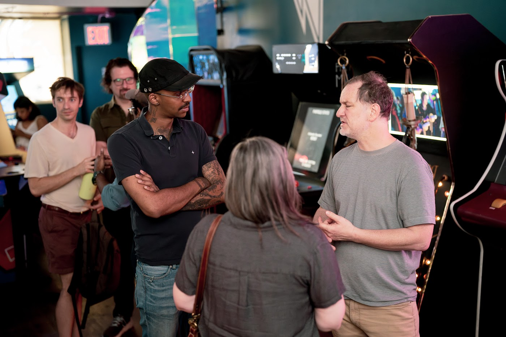
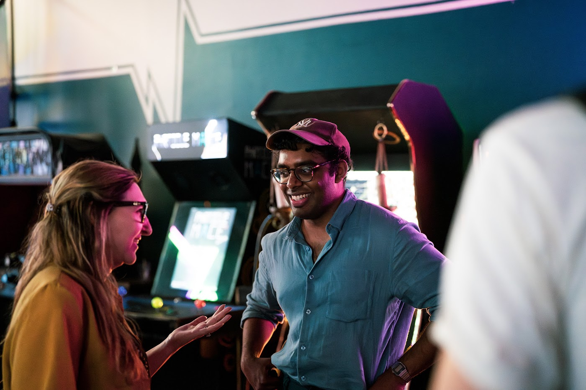
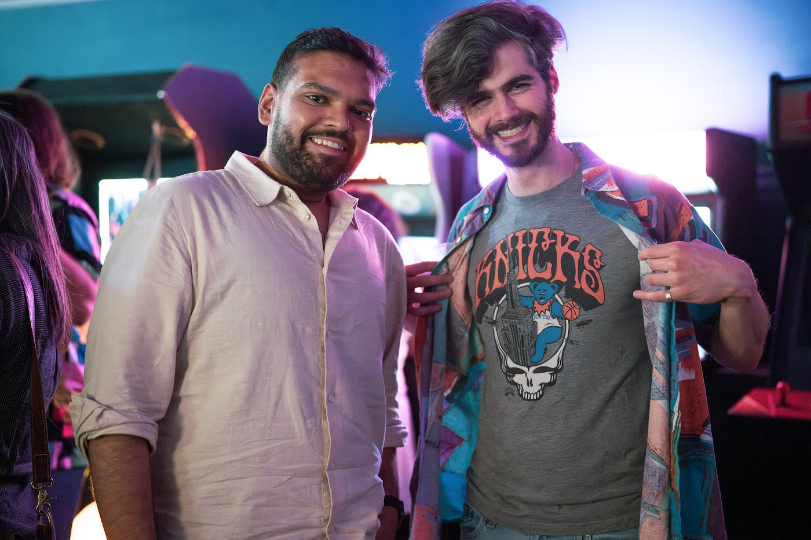
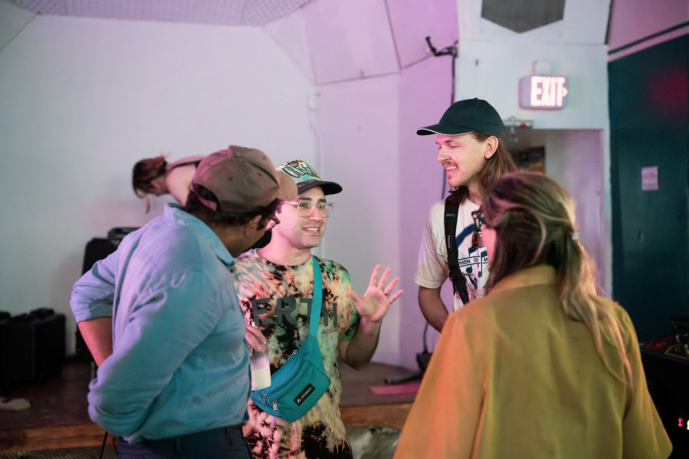
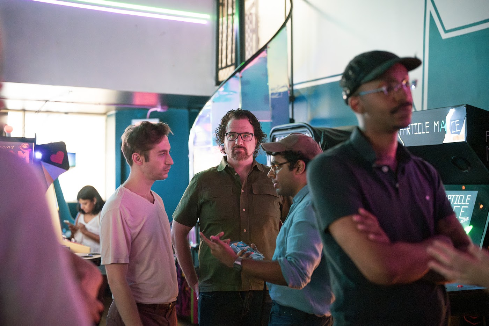
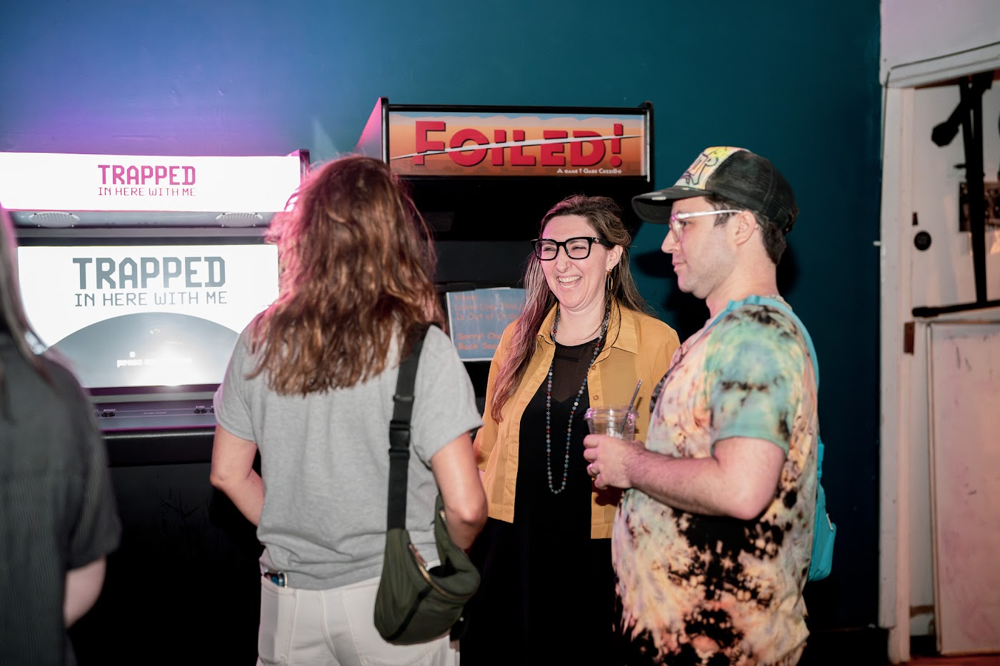

Trade real playbooks
Share what is working now, from outreach channels to door flow.
Monthly meetup · All experience levels welcome
A monthly gathering for the venue hosts and organizers behind New York's art, DIY, music, and community events.

Share resources, connect across scenes, and help each other make things happen. The room is friendly, practical, and built around conversations organizers can use.
Share what is working now, from outreach channels to door flow.
Meet hosts, photographers, venue leads, sponsors, and producers.
Build the kind of organizer network that makes future events easier.
Scenes from the May meetup · Wonderville
No polished networking theater—just organizers comparing notes, meeting future collaborators, and making the city feel smaller.






Come with a puzzle. Leave with people to call.Meet the room and learn what everyone is making.
Prime Produce shares its story, its work, and a tour of the building.
Share the puzzles behind your own events—someone has often worked through the same thing.
Come if you run a recurring series, are launching your first thing, manage a venue calendar, produce cultural events, host community dinners, throw parties, curate talks, or help rooms feel alive.
The point is not polished networking. It is a room of people who know what it takes to get people together in New York.
The community lives between meetups too: chat threads, notes, venue lists, organizer indexes, and the recurring puzzles people are actively trying to solve.
Recurring series, participatory formats, food, music, performance, and lineup curation.
Volunteers, hiring, internal communication, knowledge-sharing, and production systems.
Audience care, artist support, digital-to-in-person bridges, and reciprocal collaboration.
Event-friendly venues, policy, legal constraints, displacement, and long-term sustainability.
Tuesday, August 18 at 7:00pm at Prime Produce, 424 W 54th Street. Simple Brewing's tap room will be open, with tours around the rest of the building. Tickets are free to $5, and friends are encouraged.
Get August 18 tickets Scan for tickets
Scan for tickets